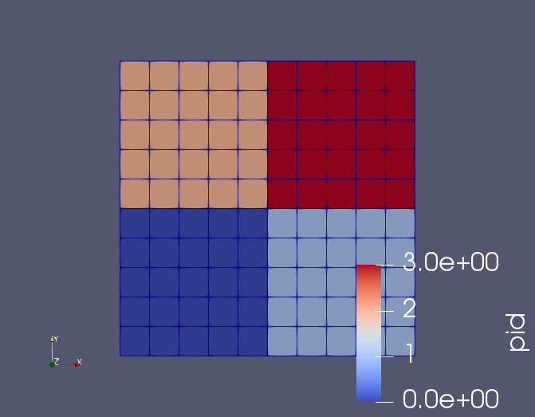

- blockThe list of block ids (SubdomainID) that this object will be applied
C++ Type:std::vector<SubdomainName>
Unit:(no unit assumed)
Controllable:No
Description:The list of block ids (SubdomainID) that this object will be applied
- weightThe list of weights (integer) that specify how heavy each block is
C++ Type:std::vector<unsigned long>
Unit:(no unit assumed)
Controllable:No
Description:The list of weights (integer) that specify how heavy each block is
BlockWeightedPartitioner
Partition mesh by weighting blocks
Overview
Under multiphysics environment, some mesh blocks have more variables and more work load than others . In parallel, the work is spread out based on partitioners that assign equal number of elements to each processor. This will causes imbalanced simulations. BlockWeightedPartitioner allow users to specify different weights for different blocks, e.g., low weights for light blocks and high weights for heavy blocks. Weights should be proportional to the relative numbers of DOFs per element in each mesh block. The weights do not need to be pre-normalized to any particular number. Small numbers are better large numbers, e.g., 1 vs 2 is better than 1000 vs 2000. Usage:
[Mesh]
type = FileMesh
file = block_weighted_partitioner.e
[Partitioner]
type = BlockWeightedPartitioner
block = '1 2 3'
weight = '3 1 10'
[]
[]
An example:

Weighted partition into 4 subdomains

Regular partition into 4 subdomains
Input Parameters
- apply_element_weightTrueIndicate if we are going to apply element weights to partitioners
Default:True
C++ Type:bool
Unit:(no unit assumed)
Controllable:No
Description:Indicate if we are going to apply element weights to partitioners
- apply_side_weightFalseIndicate if we are going to apply side weights to partitioners
Default:False
C++ Type:bool
Unit:(no unit assumed)
Controllable:No
Description:Indicate if we are going to apply side weights to partitioners
- num_cores_per_compute_node1Number of cores per compute node for hierarchical partitioning
Default:1
C++ Type:unsigned int
Unit:(no unit assumed)
Controllable:No
Description:Number of cores per compute node for hierarchical partitioning
- part_packageparmetisThe external package is used for partitioning the mesh via PETSc
Default:parmetis
C++ Type:MooseEnum
Unit:(no unit assumed)
Controllable:No
Description:The external package is used for partitioning the mesh via PETSc
Optional Parameters
- control_tagsAdds user-defined labels for accessing object parameters via control logic.
C++ Type:std::vector<std::string>
Unit:(no unit assumed)
Controllable:No
Description:Adds user-defined labels for accessing object parameters via control logic.
- enableTrueSet the enabled status of the MooseObject.
Default:True
C++ Type:bool
Unit:(no unit assumed)
Controllable:No
Description:Set the enabled status of the MooseObject.